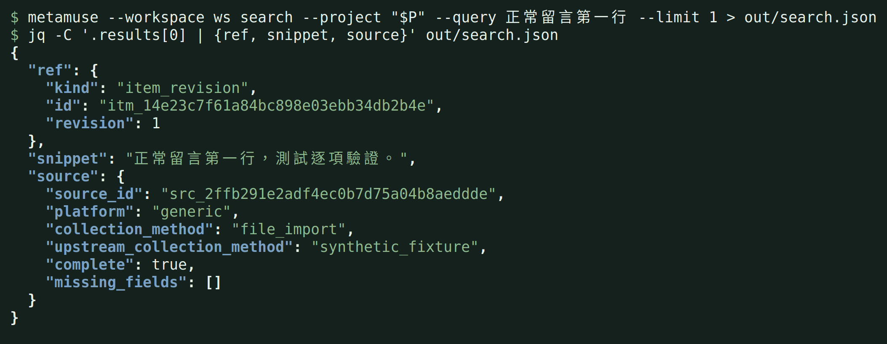
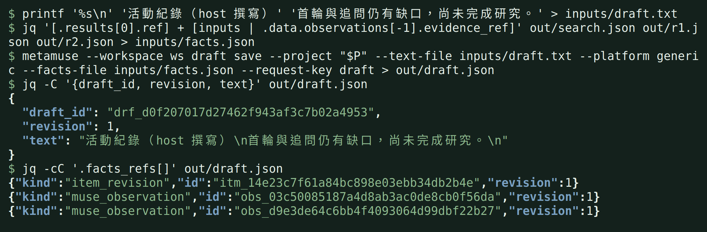
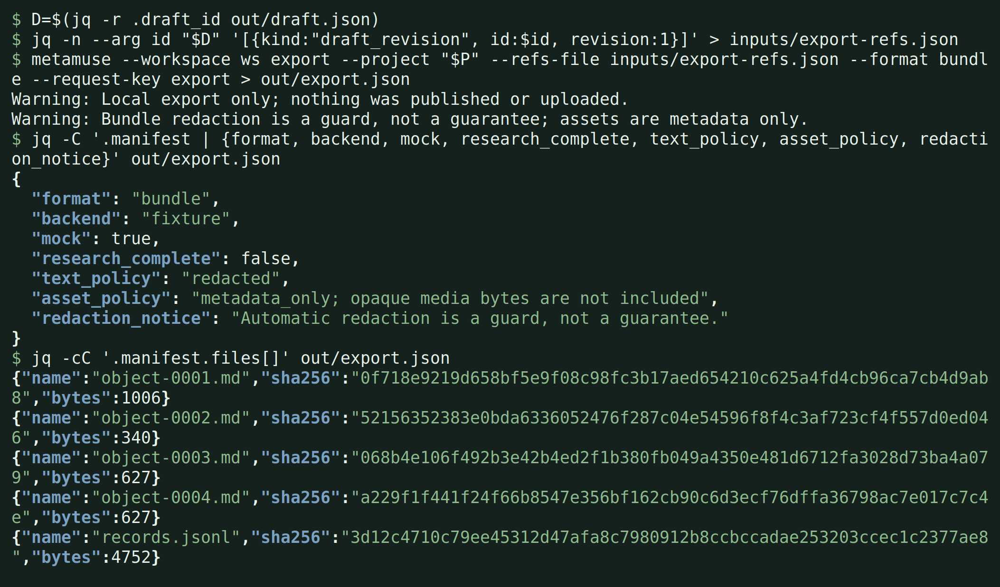

01
Bring your files
匯入資料
Import permitted local comments, text or SRT/VTT subtitles into a project.
將有權使用的本地留言、文字或 SRT/VTT 字幕匯入專案。
Have event feedback to review or a transcript to quote? Your AI assistant helps you make sense of it. MetaMuse keeps the originals, finds matching passages, and saves your draft with its citations.
活動後的留言想整理？影片裡的一段話想引用？讓你慣用的 AI 助理幫忙判讀與撰寫，MetaMuse 負責保存原文、搜尋段落，把草稿與引用一起留下。
You want to know what people asked for, find a useful quote, and write a recap you can stand behind. Give your assistant permitted comments or local subtitles. MetaMuse keeps those sources available so you can check a draft against the original words.
想知道大家提了哪些需求、找出一段值得引用的話，再寫成一份能核對的回顧。把你有權使用的留言或本地字幕交給助理整理，MetaMuse 留下來源，讓你隨時回頭確認原文。
You can use the terminal directly, or connect an AI assistant that can run MetaMuse tools.
你可以直接使用終端機，也可以接上能操作 MetaMuse 工具的 AI 助理。
Import permitted local comments, text or SRT/VTT subtitles into a project.
將有權使用的本地留言、文字或 SRT/VTT 字幕匯入專案。
Search for a word such as subtitles. Open the matching text and its source reference.
例如搜尋「字幕」，查看命中的原文與來源引用。
Your assistant groups requests and writes. Save the draft with the sources you reviewed.
由你的 AI 助理分組、判讀與撰寫，再連同你核對過的引用保存草稿。
Preview the draft and export Markdown or another local format. Check the wording against the cited material.
預覽草稿，匯出 Markdown 等本地格式，對照引用確認文字是否忠實。
Start with local files. Add an assistant when you want help interpreting and writing.
先從本地檔案開始，需要判讀與撰寫時，再交給你的 AI 助理協助。
Find comments about the next event, accessibility requests or missing materials. Your assistant can turn the selected evidence into a recap.
找出對下一場活動的建議、無障礙需求或索取講義的留言，再讓助理依選好的原文寫回顧。
Import local SRT or VTT files and search for the words you want to quote.
匯入本地 SRT 或 VTT 字幕，用關鍵字找出想引用的段落。
Keep source references and exact text revisions alongside a draft, so you can compare the wording with the original.
將來源引用與原文版本連同草稿保存，需要時可以對照文字。
Connect through CLI or MCP. The assistant asks questions and writes; MetaMuse handles the local records.
透過 CLI 或 MCP 連接。助理負責提問與撰寫，MetaMuse 負責保存本地資料。
Muse is optional and needs separate setup and human approval. Real-account use is still awaiting LIVE verification.
Muse 是可選的協作者，需要另外設定及人類授權。真實帳號使用仍待 LIVE 驗證。
Export Markdown, text, CSV, JSONL or a bundle for your own review and editing. Facebook Page text publishing is experimental and requires separate setup and your exact approval.
匯出 Markdown、文字、CSV、JSONL 或資料套件，方便後續閱讀與編輯。Facebook 粉專文字發文仍在實驗階段，需要另外設定，並由你核對批准。
These are real terminal captures from a separate synthetic walkthrough, including fixture Muse replies. Each image links to a readable transcript. They demonstrate the workflow, not real-account results.
這些是真實終端機截圖，來自另一份包含 fixture Muse 回覆的合成資料範例。每張都有純文字紀錄可閱讀，用來展示流程，不代表真實帳號的執行結果。



Install MetaMuse locally, then give an assistant access through CLI or MCP. The Skill explains how to use the connected tools.
先在本地安裝 MetaMuse，再讓助理透過 CLI 或 MCP 使用工具。Skill 提供已連接工具的操作說明。
The first example uses local synthetic files, so you can see the result before connecting accounts or an assistant.
第一個範例只用本地合成檔案，先看到結果，再決定是否連接帳號或 AI 助理。
No account is needed for local import, search, drafts or exports. Muse is a separately configured, optional discussion partner.
本地匯入、搜尋、草稿與匯出不需要帳號。Muse 是需要另外設定的選用討論對象。
It saves a clearly labelled prewritten recap. For your own work, connect an AI assistant or provide the text yourself.
範例保存的是清楚標記的預寫回顧。處理自己的資料時，可以連接 AI 助理，或自行提供文字。
Remote collectors need their own setup and operator approval. They currently have synthetic tests, with real-account LIVE validation pending. Start with local files.
遠端收集需要各自的設定與操作者授權。目前已有合成資料測試，真實帳號 LIVE 驗證仍待完成。建議先從本地檔案開始。
This page introduces a tool that runs on your computer through a terminal or a connected AI assistant. The source preview can be installed today; a packaged release is not published yet.
這裡是介紹頁。工具在你的電腦上，透過終端機或已連接的 AI 助理操作。目前可從原始碼安裝預覽版，尚未發布套件。
You need Git and uv. Install from source; uv manages Python 3.12. Installation downloads dependencies. The example then uses only local synthetic data and a prewritten recap, with no account or AI service.
需要先安裝 Git 與 uv。目前從原始碼安裝，由 uv 管理 Python 3.12。安裝時會下載依賴；之後的範例只用本地合成資料與預寫回顧，不需要帳號或 AI 服務。
Open a terminal and run these commands in order.
打開終端機，依序執行這些指令。
git clone https://github.com/TED-H-com/metamuse-cli.git cd metamuse-cli
uv installs Python and the locked dependencies.
uv 會安裝 Python 與固定版本的依賴。
uv sync --locked --python 3.12.13
Import comments, find the subtitle request and export Markdown. Open the .md files in the printed Export directory. Each run keeps a new workspace outside the checkout.
匯入留言、找到字幕需求並匯出 Markdown。打開終端機顯示的 Export directory 裡的 .md 檔。每次執行都會在專案目錄之外保留獨立的新工作區。
uv run python scripts/try_local.py
Start with files on your computer. Search, save drafts and export without a Muse account. Muse and remote collection are not yet verified with real accounts.
先從你電腦上的檔案開始。不需要 Muse 帳號，也能搜尋資料、保存草稿、匯出文件。Muse 與遠端收集尚未以真實帳號驗證。
More from Ted Huang. Every public project has a page like this one, in English and Traditional Chinese.
Ted Huang 的其他作品。每個公開專案都有一頁像這樣的中英雙語介紹。
All projects →全部專案 →